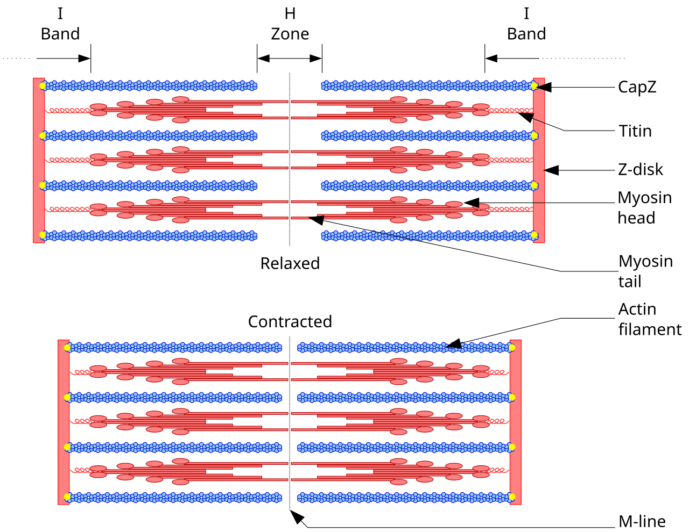

💪 Sức khỏe Nam giới
Nutrition — Protein OptimizationDeep dive⏱ 8 phút đọc
Nam Giới Cần Bao Nhiêu Protein? Tối Ưu Tổng Hợp Cơ Bắp, Thận & Cân Bằng Nội Tiết
Mức khuyến nghị RDA tiêu chuẩn (0.8g protein/kg) chỉ được thiết kế để phòng tránh suy dinh dưỡng chứ hoàn toàn không tối ưu cho sức khỏe thể lực, mật độ xương và nội tiết của người đàn ông hiện đại. Phân tích tổng hợp từ hơn 49 nghiên cứu trên tạp chí BJSM đã xác định chính xác ngưỡng nạp protein tối ưu để phát triển cơ bắp và bảo vệ sức khỏe thận lâu dài.
Ngưỡng nạp protein tối ưu cho nam giới vận động là 1.6 đến 2.2 g/kg thể trọng mỗi ngày. Chia đều thành 3–4 bữa, mỗi bữa chứa 2.5–3g Leucine là cách hiệu quả nhất để kích hoạt tín hiệu tổng hợp protein cơ bắp (mTOR) mà không gây hại cho thận ở người khỏe mạnh.
Sự Thật Về Mức RDA 0.8g/kg: Tiêu Chuẩn "Chống Chết Đói", Không Phải Tối Ưu
Khuyến nghị dinh dưỡng tiêu chuẩn (RDA - Recommended Dietary Allowance) phổ biến quy định nam giới chỉ cần nạp 0.8g protein cho mỗi kg cân nặng mỗi ngày (tương đương khoảng 56g protein cho một người đàn ông nặng 70kg). Tuy nhiên, các nhà sinh lý học thể thao hàng đầu thế giới (Morton et al., BJSM 2018; Phillips et al., Sports Medicine) đã chỉ ra rằng:
- Mức 0.8g/kg được thiết lập từ các thử nghiệm cân bằng nitơ tĩnh thập niên 1940 nhằm đảm bảo con người không bị teo cơ do đói ăn.
- Đối với nam giới có tập luyện kháng lực (gym), chơi thể thao hoặc đang trong giai đoạn giảm mỡ, mức nạp này dẫn đến suy giảm khối cơ nạc (Lean Mass Catabolism), giảm tốc độ chuyển hóa cơ bản và làm giảm độ nhạy insulin.

📊 Sơ đồ y khoa: Cấu trúc vi sợi cơ Sarcomere: Các axit amin thiết yếu (đặc biệt là Leucine) kích hoạt cơ chế tổng hợp protein cơ và tái tạo cầu nối actin-myosin. Nguồn sơ đồ: Wikimedia Commons ↗
Ngưỡng Tối Ưu: Dữ Liệu Thực Nghiệm Từ 49 Thử Nghiệm Lâm Sàng
Phân tích tổng hợp meta-analysis lớn nhất từ 49 nghiên cứu can thiệp trên 1.863 đối tượng cho thấy:
- Hiệu quả tăng cơ và sức mạnh đạt điểm bão hòa ở mức 1.62 g/kg thể trọng/ngày.
- Khoảng tin cậy trên đạt mốc 2.2 g/kg/ngày đối với những người tập luyện cường độ rất cao hoặc đang trong giai đoạn thâm hụt calo (Cutting) để ngăn ngừa mất cơ.
- Nạp vượt quá 2.2 g/kg không mang lại thêm lợi ích gia tăng cơ bắp nhưng có thể chiếm dụng tỷ lệ calo cần thiết của chất béo và carbohydrate.
Mục Tiêu Vận Động
Nhu Cầu Protein Khuyến Nghị
Phân Bổ Bữa Ăn Lý Tưởng
Vai Trò Sinh Lý Trọng Tâm
Duy trì sức khỏe & Ít vận động
1.2 – 1.4 g/kg/ngày
3 bữa chính (mỗi bữa 30g)
Chống teo cơ do lão hóa (Sarcopenia); ổn định đường huyết.
Xây dựng cơ bắp & Sức mạnh (Bulking)
1.6 – 2.0 g/kg/ngày
4 bữa (mỗi bữa 35–45g)
Tối đa hóa tổng hợp protein cơ bắp (MPS) qua kích hoạt mTOR.
Giảm mỡ giữ cơ (Cutting / Caloric Deficit)
2.0 – 2.4 g/kg/ngày
4–5 bữa (mỗi bữa 40–50g)
Bảo vệ cơ bắp khỏi quá trình tân tạo đường (Gluconeogenesis); tăng cảm giác no.
Vận động viên sức bền (Chạy bộ, Tri)
1.4 – 1.8 g/kg/ngày
Kèm carbohydrate tỷ lệ 1:3
Phục hồi tổn thương vi sợi cơ; tái tạo enzyme ty thể.
"Ngưỡng Leucine" (Leucine Trigger): Bí Quyết Nạp Protein Hiệu Quả
Cơ thể không đo lường tổng lượng protein nạp vào một lúc, mà tế bào cơ cảm nhận nồng độ amino axit thiết yếu Leucine trong máu:
1. Để kích hoạt công tắc phân tử mTORC1 (bắt đầu quá trình tổng hợp cơ bắp), mỗi bữa ăn cần đạt tối thiểu 2.5g đến 3g Leucine nguyên chất.
2. Lượng Leucine này tương đương với khoảng 25–35g protein chất lượng cao (ví dụ: 150g ức gà, 150g cá hồi, 4 quả trứng hoặc 1 muỗng Whey Protein Isolate).
3. Do đó, việc dồn toàn bộ 120g protein vào duy nhất một bữa ăn sẽ kém hiệu quả kích thích cơ bắp so với việc chia đều thành 3–4 bữa cách nhau 3–4 tiếng.
Protein Liều Cao Có Gây Hại Cho Thận Của Nam Giới?
Một trong những nỗi sợ phổ biến nhất là: "Ăn nhiều protein sẽ làm hỏng thận". Các bằng chứng y khoa hiện đại khẳng định:
- Ở những người có chức năng thận hoàn toàn bình thường, mức nạp protein lên tới 2.5–3.3 g/kg/ngày không hề làm suy giảm độ lọc cầu thận (eGFR) hay gây tổn thương cấu trúc thận (Poortmans & Dellalieux; Antonio et al.).
- Nồng độ Creatinine trong máu có thể tăng nhẹ khi xét nghiệm, nhưng đây là hệ quả tự nhiên của khối lượng cơ bắp lớn và phân giải creatine, không phải là dấu hiệu suy thận. (Bác sĩ chuyên khoa sẽ đối chứng bằng chỉ số Cystatin C để đánh giá chức năng thận chính xác).
Giao Thức 4 Bước Tối Ưu Nạp Protein Mỗi Ngày
Tính Toán Mục Tiêu Cá Nhân: Lấy cân nặng nhân với hệ số 1.8g. (Ví dụ: bạn nặng 75kg → 75 × 1.8 = 135g protein/ngày).
Chia Đều 3–4 Bữa: Phân bổ 135g ÷ 4 ≈ 34g protein/bữa (Bữa sáng, trưa, xế sau tập, tối).
Ưu Tiên Nguồn Đạm Hoàn Chỉnh: Thịt bò nạc, cá, gia cầm, trứng, sữa chua Hy Lạp và whey protein để đảm bảo đủ toàn bộ 9 amino axit thiết yếu (EAAs).
Uống Đủ Nước Để Thải Nitơ: Khi ăn lượng protein cao, cơ thể cần nhiều nước hơn để đào thải hợp chất urê qua nước tiểu. Đảm bảo uống tối thiểu 35–40 ml nước cho mỗi kg thể trọng mỗi ngày.
Tài Liệu Tham Khảo & Nguồn Y Khoa
Morton, R. W., Murphy, K. T., et al. (2018).A systematic review, meta-analysis and meta-regression of the effect of protein supplementation on resistance training-induced gains. BJSM, 52(6), 376–384. Tạp chí BJSM (PMID: 28698222) ↗
Phillips, S. M., Chevalier, S., & Leidy, H. J. (2016).Protein requirements beyond the RDA: implications for optimizing health. Applied Physiology, Nutrition, and Metabolism, 41(5), 565–572. Báo Cáo Nghiên Cứu Gốc (NCBI PubMed: 26960445) ↗
Antonio, J., Ellerbroek, A., et al. (2016).A high protein diet has no harmful effects: a one-year crossover study in resistance-trained males. Journal of Nutrition and Metabolism. Báo Cáo Nghiên Cứu Gốc (NCBI PubMed: 27807480) ↗
Jäger, R., Kerksick, C. M., et al. (2017).International Society of Sports Nutrition Position Stand: protein and exercise. Journal of the International Society of Sports Nutrition, 14(1), 20. Tạp chí JISSN (PMID: 28642676) ↗
📚
Nguồn Tham Khảo Y Khoa & Nghiên Cứu Gốc
Bài viết này được tổng hợp và kiểm chứng từ các nghiên cứu y sinh học, hướng dẫn lâm sàng và tài liệu khoa học thiết bị đeo của British Journal of Sports Medicine (BJSM) & American Journal of Clinical Nutrition.
💪 Men's Health
Nutrition — Protein OptimizationDeep dive⏱ 8 min read
Protein Requirements for Men: Optimizing Muscle Protein Synthesis, Renal Health & Hormones
The standard RDA of 0.8g protein/kg was formulated merely to prevent frank clinical deficiency—not to optimize lean muscle mass, bone mineral density, and metabolic longevity in active men. A landmark meta-analysis of 49 trials in the British Journal of Sports Medicine established the definitive protein intake threshold for maximal hypertrophy and endocrine health.
The optimal protein intake window for active men is 1.6 to 2.2 g/kg of body weight daily. Spreading intake across 3–4 meals containing 2.5–3g of Leucine triggers maximal muscle protein synthesis (MPS) via mTORC1 without renal stress in healthy individuals.
Shattering the 0.8g/kg Myth: Survival Standard vs. Optimal Physiology
Standard nutritional guidelines (RDA - Recommended Dietary Allowance) prescribe just 0.8g protein per kg of body weight daily (~56g for a 70kg male). Leading sports scientists (Morton et al., BJSM; Phillips et al., Sports Medicine) emphasize:
- The 0.8g/kg baseline was established from static 1940s nitrogen balance studies solely to prevent deficiency edema and overt muscle wasting.
- For active men engaged in resistance exercise or caloric deficits, this intake guarantees lean mass catabolism, depressed resting metabolic rate, and impaired tissue recovery.
The Optimal Target: Empirical Evidence from 49 Clinical Trials
A landmark meta-analysis of 49 randomized controlled trials across 1,863 participants established:
- Muscle protein synthesis and strength accrual plateau at 1.62 g/kg/day.
- The upper 95% confidence interval reaches 2.2 g/kg/day for athletes training at high volume or in severe caloric deficits to preserve lean mass.
- Exceeding 2.2 g/kg yields no further hypertrophic gains and may unnecessarily crowd out essential dietary fats and carbohydrates.
Skeletal muscle tissue senses the circulating concentration of the essential amino acid Leucine:
1. To initiate the intracellular mTORC1 pathway, a single meal must contain 2.5g to 3.0g of pure Leucine.
2. This threshold equates to 25–35g of high-biological-value protein (e.g., 150g chicken breast, 150g salmon, 4 whole eggs, or 1 scoop Whey Isolate).
3. Consuming 120g of protein in a single bolus is far less stimulatory for 24-hour muscle protein accretion than distributing intake across 3–4 meals spaced 3–4 hours apart.
Does High Protein Damage Healthy Male Kidneys?
One of medicine's most durable myths is that high protein damages renal function. Contemporary nephrology evidence clarifies:
- In individuals with normal baseline renal function, intakes up to 2.5–3.3 g/kg/day produce zero decline in estimated glomerular filtration rate (eGFR) or structural damage (Poortmans & Dellalieux; Antonio et al.).
- Blood creatinine may rise slightly due to elevated muscle mass and creatine turnover, but this is a benign artifact. Clinicians verify true kidney function by ordering a Cystatin C blood test.
4-Step Practical Protocol for Protein Optimization
Calculate Baseline Intake: Multiply body mass in kg by 1.8g. (e.g., 75kg male: 75 × 1.8 = 135g protein/day).
Distribute Across 4 Windows: Allocate 135g ÷ 4 ≈ 34g protein per meal (Breakfast, Lunch, Post-Workout, Dinner).
Anchor Around Complete Sources: Lean beef, wild fish, poultry, eggs, Greek yogurt, and whey to guarantee all 9 essential amino acids (EAAs).
Hydrate for Nitrogen Excretion: Higher protein turnover increases urea excretion; drink 35–40 mL water per kg body mass daily.
Clinical References & Scientific Sources
Morton, R. W., Murphy, K. T., et al. (2018).A systematic review, meta-analysis and meta-regression of protein supplementation on resistance training. BJSM, 52(6), 376–384. View on PubMed ↗
Phillips, S. M., Chevalier, S., & Leidy, H. J. (2016).Protein requirements beyond the RDA: implications for optimizing health. APNM. View on PubMed ↗
Antonio, J., Ellerbroek, A., et al. (2016).A high protein diet has no harmful effects: a one-year crossover study in resistance-trained males. J Nutr Metab. View on PubMed ↗
Jäger, R., Kerksick, C. M., et al. (2017).International Society of Sports Nutrition Position Stand: protein and exercise. JISSN, 14(1), 20. View on JISSN ↗
📚
Clinical Reference & Scientific Backing
This article is synthesized from peer-reviewed medical literature, clinical guidelines, and wearable biometric validation studies from British Journal of Sports Medicine (BJSM) & American Journal of Clinical Nutrition.